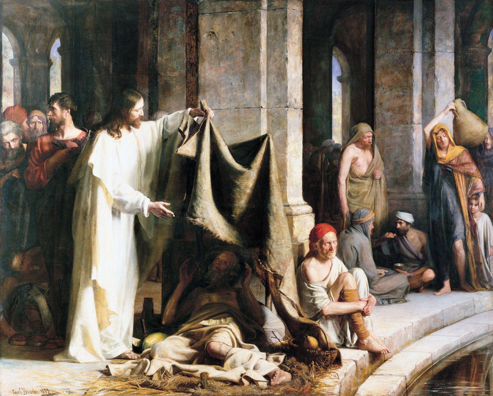

Choose one if time allows
Come, Follow Me · Psalms
Psalm 103:2
What has the Savior done for you that you want to remember today?

Watch together · 11:23
Elder David A. BednarElder Patrick Kearon
The video could not load. Open the Church’s player below, or use a downloaded copy.
Look for an invitation you can act on next Sunday.
Reflect together · Our worship
What would help someone arriving tired, distracted, or alone feel welcome and turn toward the Savior?
Watch together · 4:22
President Paul V. Johnson
Consider what we can each bring to our time together.
Reflect together · Our learning
How can we make room for each other’s insights, including someone who is opening these scriptures for the first time?
Carry it into the week
What do you want toremember about the Savior?
How will you preparefor next Sunday?
A moment in the Psalms
Tehillim תהיליםThe Hebrew title of Psalms means “praises.” Remembering the Lord’s goodness can become worship.
Choose someone who could use a word of hope.
Read together. Which phrase would you share with this person?
What does this passage help you understand about the Savior?
Gather our praise · 30–60 seconds
A word from you can begin our praise.
Read Psalm 103:1–5Which of these gifts helps you turn toward Him?
A light for the next step · 1 minute
Read the verse. Then pause over each phrase.
Thy wordis a lamp unto my feet,and a light unto my path.
What word stands out to you?
Find Christ in the Psalms · 1–2 minutes
“The stone which the builders refused is become the head stone of the corner.”
Where do you recognize Jesus Christ? Choose a connection together.
Read together
For Sunday, September 6
The Church has assigned two instruction videos and discussion for this Sunday. The main sequence follows that plan. All additional moments are optional.
Timing is a suggested teaching plan. If time is short, keep the discussion focused and finish on time. Use one optional moment only if the remaining cushion allows. The class still ends at 25 minutes.
Each optional moment returns to the place you left in the lesson. There are no scores or sign-ins.
Test sound and save the videos ahead of time. Each video’s options let you select a downloaded copy from your device. It stays on your device. Selecting the same video keeps the supplied captions in sync.
Start the timer when class begins. It continues while videos play and while another tab is open. It pauses only when you pause it; refreshing the page resets it. Use ← and → to navigate, Home to return to the welcome, and F for fullscreen.
The Church’s instructions direct teachers to the Implementation Guide if technical difficulties prevent showing the videos. Its discussion topics cover worship, belonging, and learning at home.
The opening artwork is the complete Christ Healing the Sick at Bethesda by Carl Heinrich Bloch (1883), from the Brigham Young University Museum of Art, shared through Gospel Media.
Videos and captions: The Church of Jesus Christ of Latter-day Saints. Discussion prompts and optional activities are adapted for this presentation; original questions and scripture pairings are linked above. Scripture quotations: King James Version. Historical note: this week’s Come, Follow Me introduction.
An independent, noncommercial lesson by Outside the World. Artwork use follows the Gospel Media sharing guidance and Church terms of use. Core OTW palette ↗
Enable JavaScript to navigate the lesson. You can also open the Church’s videos and discussion guide.